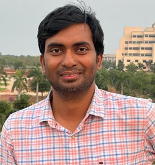
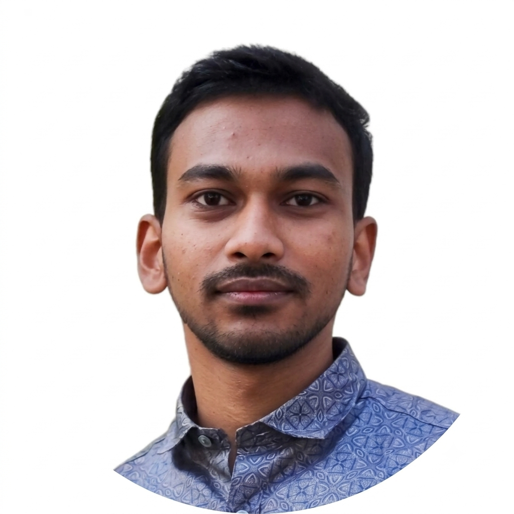

The CSMB Group at IIT Bhubaneswar investigates complex soft and biological systems using computational and theoretical approaches.
Our research explores the physical principles governing nonequilibrium soft matter, active systems, biomolecular organization, and biological materials across different length and time scales.
Computational investigation of complex soft materials, collective behavior, phase transitions and emergent structures.
Study of nonequilibrium systems, active particles, collective dynamics and pattern formation.
Computational approaches to understand physical mechanisms underlying biological organization.
Simulation of phase separation and organization of biomolecular condensates in complex environments.
Computational studies of membranes, vesicles, membrane remodeling and molecular interactions.
Investigation of polymer networks, cytoskeletal organization and their interactions with biological condensates.
Dr. Jiarul Midya
Assistant Professor
Department of Physics
IIT Bhubaneswar

Ajit Kumar Sahu
Ph.D. Scholar
Department of Physics
IIT Bhubaneswar
Research publications, preprints and related scientific contributions will be listed here.
School of Basic Sciences
Indian Institute of Technology Bhubaneswar
Odisha, India